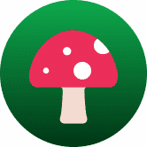 Wonder Game Wonder Game 是第一款在 Harmony 和 ICE 区块链上推出的协作 DeFi 游戏。游戏是一个有趣而混乱的地方，三个主要角色 NFT - Alice、Queen 和 Card 试图收集最珍贵的资产 - $
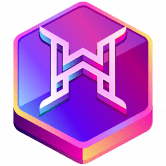 WonderHero WonderHero是一款赚钱的手游RPG游戏。这款动漫灵感的回合制游戏在 iOS 和 Android 平台上进行，玩家在其中收集英雄、武器和装备，进入 RPG 战斗并在幻
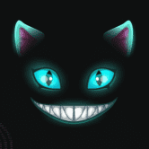 Wonderland Wonderland 是 Avalanche Network 上第一个基于 TIME 代币的去中心化储备货币协议。每个 TIME 代币都由 Wonderland 宝库中的一揽子资产（例如 MIM、TIME-AVAX LP 代币等）支持，赋予其不
WonderPals WonderPals 是生活在以太坊区块链上的 10,000 个可爱的 NFT 的集合，由 200 多个不同类别的稀有性特征组合而成。该系列中将有一些特殊的 1/1，您可能会很幸运，并且会从您
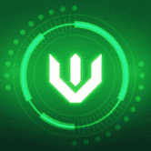 WOODCHAIN WoodChain 是一种去中心化金融，其使命是为用户带来最大的用处。 Wood Chain 是一个基于 ETH、BSC、POLYGON、HECO 等众多智能链网络的一体化平台。 在 Wood
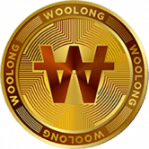 Woolong 创始人创建了 Woolong 的“WOO”，以解决数字货币与更广泛的用户群之间的脱节问题。我们承诺和我们的资源来挑战当前数字货币用户体验的“传统风格”。 Woolong Corp
Woonkly Woonkly Metasocial Network 是一个去中心化的社交网络，所有帖子都直接转换为 NFT，用户可以完全控制他们的数据，并且内容不会上传到服务器，而是通过 IPFS（星际文件
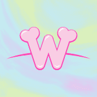 Wooshi World Collection Wooshi World 的限量版 Genesis Minting 包括 11,111 个程序生成的多彩元伴侣，以及数百个受游戏文化启发的配件。 每个 Wooshi 都有动画并完全以 3D 呈现。目标是为 Wooshi 带来生命，以便与角色建
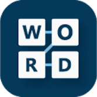 Word Search Blitz 你喜欢拼字游戏吗？试试我们全新的拼写难题。Word Search Blitz 拥有一个 30,000 多个单词的大型数据库，每个谜题随机选择每个游戏的玩家单词列表。创造数百万种不
WordProof Timestamp WordProof 以用户友好的方式将区块链的好处带入内容世界。开始使用 WordPress 的 WordProof 时间戳插件，并订阅以了解未来 WordProof 的发展。 WordProof 时间戳： - 在区块链上安全地声明和保护您的
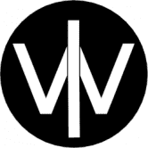 World Builder World Builder 是一个通过区块链和加密资产技术改善自由和繁荣的长期项目。目前它处于“IGO”阶段，类似于 ICO，但游戏化了。World Builders 是 NFT 的集合，它们
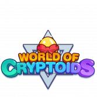 World Of Cryptoids 在 World of Cryptoids，我们正在打造一款大型多人在线游戏。一个受到口袋妖怪启发的元宇宙世界，玩家可以使用各种基于区块链的代币来繁殖、拥有和
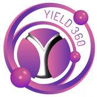 Yield360 Yield360 是一家 DeFi 开发公司，设计下一代 DeFi 2.0 解决方案，试图通过其 Yield 360 自动质押协议即兴质押模块。 该公司的主要产品是 360 美元的代币，具有非凡的价值主张，使代
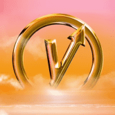 Yieldly.Finance Yieldly 是 Algorands 第一个也是最大的 Defi 协议。 我们的核心目标是让用户和项目能够在没有摩擦、gas 效率低下或安全风险的情况下交换数字价值。 Yieldly 的产品套件包括质押
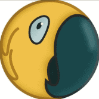 YieldParrot Yield Parrot 是内置于币安智能链中的最先进的收益聚合器和优化器。 在 yieldparrot.finance，用户可以在 DeFi 生态系统中找到最佳机会，提供世界
YieldWolf YieldWolf 是下一代 DeFi 自动化平台。 它有效地根据最知名的协议自动执行单产农业策略。 YieldWolf 通过以最优利率自动组合奖励并在池中的所有农民之间分配 gas 成本来增加潜在
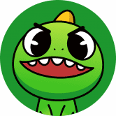 YooShi YooShi Metaverse = NFTs + GameFi Launchpad + YooShi IP Creative + Charity。 YooShi NFT 营销包括 NFT 交易市场和 NFT 拍卖市场。YooShi NFT 拍卖功能独特而有趣。 拍卖作品发布时，每次新出价必须
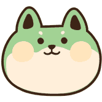 Yooshiba Inu Yooshiba Inu ($YSHIBAINU) 是币安智能链下的 BEP-20 代币。 一种超通缩代币，每笔交易（购买、出售和转让）征收 10% 的税，其中 5% 的税进入流动资金池。 合约的回购销毁功能保证了代币
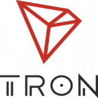 [TRON]invest http://troncity.io 在新项目重新开放之际，http://Tron-city.com（又名 TronTower）打算将 100 Tron 奖励给前 10 位总共 1000 Tron比如这个（关于
A Dream Dawns 我的仅数字版本的主页A Dream Dawns NFT - 常见问题（FAQ） ▶ 什么是梦想黎明？ A Dream Dawns 是一个 NFT（非同质代币）集合。存储在区块链上的数字艺术品集合。 ▶ 有
A Familiar Memory Genesis 300 个生成记忆的创世集合，每个钱包 1 个。美丽的忧郁。在最后一页翻开之前，你永远不知道你在故事中的位置。熟悉的记忆：第二章 NFT - 常见问题（FAQ）
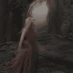 A Familiar Memory: Chapter Two 他们说从家里逃跑，他们从不说家在哪里。 过去 7 天没有售出《熟悉的记忆：第二章》。熟悉的记忆：第二章 NFT - 常见问题（FAQ） ▶ 什么是熟悉的记忆：第
A week in New York 我和@ktknighteth 在纽约拍摄的一组照片你真的很想在未来成为我的 1/1 持有者！以投标开始周末将是惊人的！我的第一个系列 - 在纽约的一周 https://opensea.io/collection/a-week-in-new-york 故
Aavegotchi V3 Aavegotchi V3 NFT-常见问题（FAQ） ▶什么是Aavegotchi V3？ Aavegotchi V3是NFT（不可杀死的令牌）集合。存储在区块链上的数字艺术品集合。 ▶存在